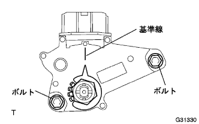

Neutral start switch ASSY adjustment |
| 1. Neutral Start Switch Assy inspection |
The parking brake acts to turn on the ignitsushi -si.
Step on the brake pedal, the engine starts only when the shift lever is shifted to the N or P range, and it does not start in the other range.
Only when the shift lever is R range, the backup lamp lights and the reverse position warning buzzer sounds, and it does not operate in the other range.
If there is an abnormality, adjust the nyutoral Start Suitsui.
| 2. Neutral start switch ASSY adjustment |
Make the shift lever in N range.
Loosen the two bolts of the Niyutoral Start Suitsu.
Move the nyutoral base line and the groove to match the nyutral start Suitsui.
Tighten two set bolts.
|  |
After the adjustment, perform the nehutoral start Suitsui inspection.